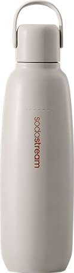
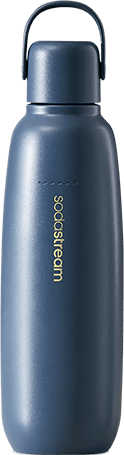

Butelka
termiczna do gazowania wody Granatowa, 0,9 l
Złap ulubione bąbelki do termicznej butelki i zabierz je ze sobą!

Poznaj SodaStream Fizz&Go - butelkę termiczną do gazowania wody, która łączy w sobie funkcjonalność kubka termicznego, bidonu na wodę i butelki do saturatora!
SodaStream Fizz&Go to rewolucyjne rozwiązanie, które pozwala gazować wodę bezpośrednio w butelce, a dzięki podwójnym ściankom utrzymuje idealną temperaturę Twoich zimnych napojów do 12 godzin.
Wybierz swój styl!
ponadczasowy i uniwersalny, idealny dla osób, które cenią klasykę w nowoczesnym wydaniu.

subtelny beż
elegancki granat
pastelowa mięta
subtelny beż
elegancki granat
pastelowa mięta

Dołącz do rewolucji i bąbelkuj w dobrym stylu!
SodaStream Fizz&Go: Twój niezastąpiony towarzysz na lata
Zapomnij o jednorazowych butelkach! SodaStream Fizz&Go to bidon termiczny na wodę, który łączy to, co najlepsze: trwałość, wygodę i dbałość o środowisko.

Poznaj SodaStream Fizz&Go
Nie przecieka, dzięki hermetycznej konstrukcji z półelastycznym paskiem silikonowym i uszczelką.
Butelka nie zawiera BPA.
Jest łatwa w czyszczeniu - można ją bez obaw myć w zmywarce.
Jest wykonana z wytrzymałej stali nierdzewnej 18/8, odpornej na korozję i uderzenia.

SodaStream Fizz&Go butelka termiczna, w której nagazujesz wodę!
Wyobraź sobie rześkie bąbelki w upalny dzień. Butelka SodaStream Fizz&Go to Twój codzienny kompan, który dba o komfort w każdej sytuacji! Gazuj wodę bezpośrednio w swojej nowej, ulubionej butelce i ciesz się idealnym napojem, gdziekolwiek jesteś.


gazuj
miksuj
i w drogę

Termiczna
butelka do
gazowania
Krok 1

Napełnij butelkę termiczną SodaStream Fizz&Go 0,9 l wodą z kranu i zamontuj w saturatorze SodaStream.
Krok 2

Naciśnij przycisk gazowania kilka razy, aż uzyskasz pożądany poziom bąbelków.
Krok 3

Dodaj wybrany syrop SodaStream lub swoje ulubione dodatki.

Do jakich saturatorów pasują butelki termiczne SodaStream
Fizz&Go?
Wielorazowe butelki metalowe SodaStream Fizz&Go 0,9 l są kompatybilne z saturatorami SodaStream Art, Terra,
Duo i Ensō.
Butelka termiczna czy kubek termiczny - co wybrać?
Butelka SodaStream Fizz&Go to pojemność, wygoda i wszechstronność w jednym! Jest idealna dla aktywnych.
Możesz ją zabrać
na piesze wędrówki, ale też świetnie sprawdzi się też jako kubek termiczny do samochodu.
Czy istnieje bidon,
który potrafi wszystko?
Tak! SodaStream Fizz&Go to bidon termiczny, w którym możesz nagazować wodę. Utrzymuje idealną temperaturę
napojów
gazowanych i bez gazu – zarówno zimnych oraz ciepłych*.
*UWAGA! Nie nasycaj gazem wody o temperaturze powyżej 45°C. Zachowaj szczególną ostrożność podczas przechowywania gorących płynów w butelce i otwierania butelki zawierającej gorące płyny.

Designerska butelka, która definiuje Twój styl
Pracujesz w biurze, a po pracy biegniesz na siłownię? SodaStream Fizz&Go dotrzyma Ci kroku przez
cały dzień, zapewniając nawodnienie
i wygodę w każdej sytuacji.
Lubisz aktywnie spędzać czas na świeżym powietrzu? Zabierz SodaStream Fizz&Go na rower, spacer
czy wycieczkę w góry. Ciesz się ulubionymi napojami w idealnej temperaturze,
gdziekolwiek jesteś.
Cenisz sobie styl i elegancję? SodaStream Cool to nie tylko funkcjonalny bidon,
ale też modny
dodatek, który podkreśli
Twój indywidualny styl.
Dbasz o środowisko? Z SodaStream Fizz&Go możesz zamienić tysiące jednorazowych butelek na lepsze
i przyczynić się do ochrony naszej
planety.
Szukasz idealnego pomysłu na prezent urodzinowy? SodaStream Fizz&Go
to praktyczny i stylowy upominek,
który ucieszy każdego.

Więcej możliwości, więcej smaku!
Zamień swoją wodę gazowaną w coś wyjątkowego dzięki syropom SodaStream. Twórz własne napoje na każdą okazję:

Domowe napoje gazowane:
Dodaj do wody gazowanej syrop SodaStream i stwórz swój idealny napój. Wybieraj spośród owocowych wariantów bez cukru lub klasyków w stylu Coli. Odkrywaj nowe smaki i miksuj do woli!

Lemoniada:
Przygotuj w kilka chwil klasyczną lub owocową lemoniadę gazowaną, która doskonale ugasi pragnienie, niezależnie od pogody!

Moktajle i koktajle:
Korzystaj z bezalkoholowych baz SodaStream Crafted, aby tworzyć wyjątkowe napoje na spotkania z przyjaciółmi – od owocowych miksów po eleganckie kompozycje na wieczór.